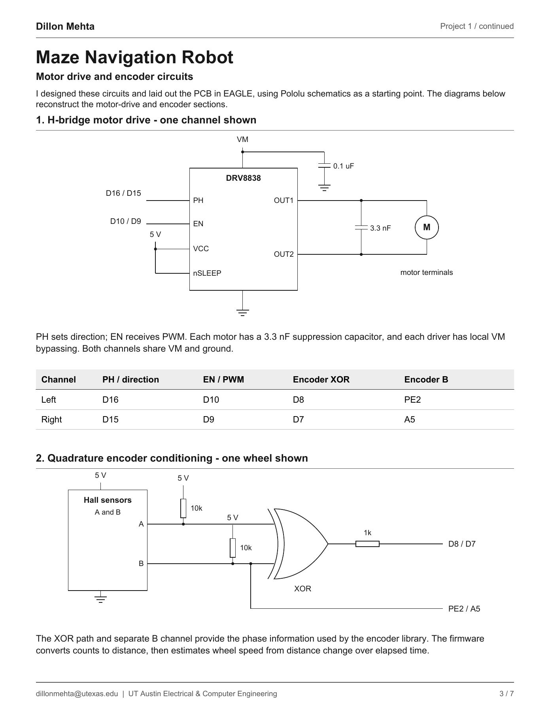
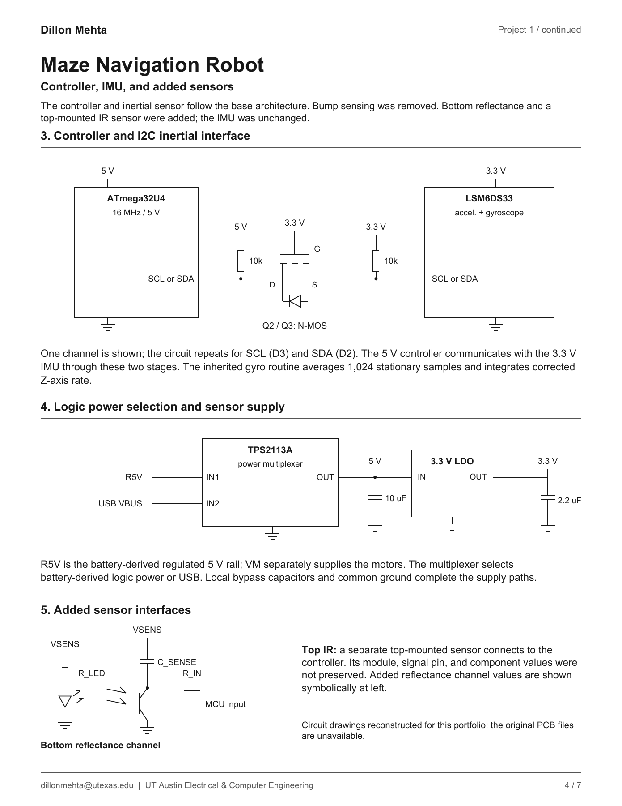

Embedded software · Electronics · Fabrication
Maze navigation robot
I built a small autonomous robot for timed maze-navigation competitions. The route and target time changed by event, so the firmware had to balance completion time against drift and mechanical variation.

What I built
I wrote the route parser, timing allocation, motion profiles, encoder distance and speed calculations, and motor correction logic in C++. I designed and laid out the PCB in Autodesk EAGLE, ordered it, soldered the assembly, and designed the printed shell in Fusion. I used Pololu schematics as references while developing my own board and made changes to the sensing layout.
The hardware evolved over three iterations. Balloon tread increased wheel traction, and a rear spoiler served as a counterweight. I removed the original bump sensing, added a bottom reflectance channel and a top-mounted IR sensor, and retained the inertial interface.
- Controller
- ATmega32U4
- Motion sensing
- Wheel encoders + LSM6DS33 IMU
- Motor drive
- Two DRV8838 channels
- Tools
- C++, EAGLE, Fusion, soldering, 3D printing
The motion controller
Each straight segment accelerates for the first quarter of its allotted time, cruises for half, and decelerates for the final quarter. Encoder-derived speed adjusts both motor PWM commands. Gyro angle adds a correction to the right motor. The route scheduler reserves time for turns, then assigns the remaining time to straight segments in proportion to their distance.
// From fwd(); comments and unrelated lines omitted.
double delta_T = findTime(distance);
double delta_T_us = delta_T * 1e6;
if (elapsed_time <= delta_T_us / 4) {
velocity_setpoint = (16.0 * distance) /
(3.0 * delta_T * delta_T) * (elapsed_time / 1e6);
} else if (elapsed_time <= 3 * delta_T_us / 4) {
velocity_setpoint = (4.0 * distance) / (3.0 * delta_T);
} else {
double t_dec = elapsed_time - 3 * delta_T_us / 4;
velocity_setpoint = (16.0 * distance) /
(3.0 * delta_T * delta_T) *
((delta_T / 4) - t_dec / 1e6);
}
left_pwm += kP * (velocity_setpoint - vL());
right_pwm += kP * (velocity_setpoint - vR())
- kPs * ang();
motors.setSpeeds(left_pwm, right_pwm);Download the full competition firmware (.ino). It is the original working file, not cleaned-up sample code.
For distance, the firmware uses 12 encoder counts per motor rotation, a 29.86:1 gearbox ratio, and separately calibrated wheel circumferences. A straight segment exits when it reaches the target distance or exceeds its time allocation by 100 ms.
Electronics
These are readable reconstructions of the circuits I designed for my PCB. They show the motor and encoder channels, controller-to-IMU interface, power selection, and sensor changes. The original board files were lost with an older laptop, so I reconstructed the drawings from the circuit architecture and preserved details.


The motor and encoder drawings show one channel where the left and right channels are electrically equivalent. The added reflectance channel is symbolic where exact component values were not preserved; the top IR module details are likewise not claimed as an exact recovered schematic.